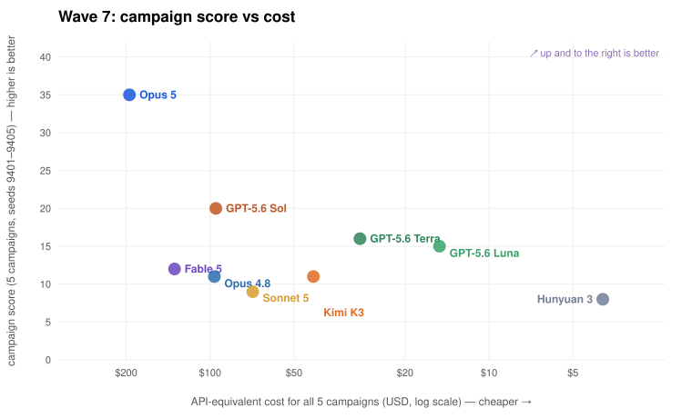
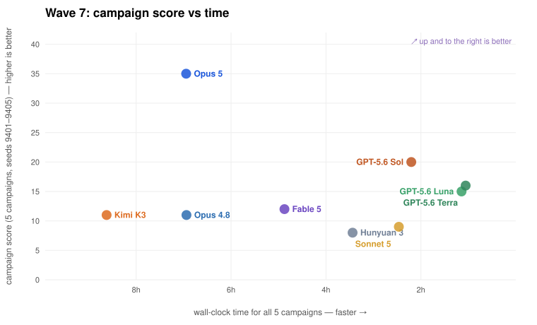

Coding agents play Arkham Horror: The Card Game solo, inside a rules-enforcing engine, with a persistent notebook as their only memory between games. Two questions under investigation: do models actually learn from repeated play, and can they playtest — find real rules bugs in the engine that hosts them? Every score on this page is a link into the full replay.
Wave 7 (July 20–22) ran eight frontier models through five full campaigns each with complete telemetry — thinking level, tokens, wall clock, API-equivalent cost. The GPT-5.6 family swept the podium at one to two percent of the Claude lanes' token bill: Sol scored 20 for $2.22; Fable 5 scored 12 for $134; Kimi K3 tied Opus at half the price on measured OpenRouter billing. Score climbs the y-axis; cost (log scale) and time run right-to-left — so the models you want are up and to the right.


Every model, ten games, identical seeds and investigator rotation. The headline number is the final-20% average — games 9 and 10, after eight games of learning. Each bar below is one game: height is score, gold is a win. Click any bar to step through that game decision by decision.
The same ten-game gauntlet ran three times as models became available. Each wave played a progressively harder-to-cheat engine — the playtest program (Exhibit D) fixed rules bugs between waves, most of which had been quietly pro-player — so cross-wave comparison is indicative, not controlled.
Hunyuan 3 kept repeating a death it had already written down how to avoid — because its own notebook compaction deleted the lesson. We changed one contract (compact means compress, not discard) and reran the identical gauntlet. Same seeds, same engine. The fatal choice flipped, citing the surviving note.
rows: same model, before / after the memory fix · bars are games 1–10
Each model played five full three-scenario campaigns in sequence, sharing one notebook across all five. Bars are campaign scores in the order actually played — a rising shape is cross-campaign learning. Click a bar to open that campaign's first leg.
Agents are told verified engine-bug reports outrank score — every adversary becomes an auditor. Reports flow through a tiered pipeline: cheap models play, strong models audit the transcripts, adversarial verification and a final human-tier gate adjudicate. The gate reversed rulings in every direction, including its own, eight times.
Wave 6 put a new model in the judge's chair. On its release week, Kimi K3 audited all sixty artifacts of a fresh fifteen-campaign wave — every scenario transcript and every campaign ledger. It filed forty findings: twenty-three confirmed (twenty-two distinct defects, including two exploits and three material-outcome bugs that had survived five prior audit waves), seventeen refuted. Six of the refutations were the transcript's fault, not the judge's — each became an adopted logging improvement — and a Sol counter-audit of six K3-cleared games corroborated five, catching one missed display-severity defect. Lower precision than Sol, more confirmed defects than any auditor before it.
Auditor precision — confirmed defects per claim. Playing strength and auditing strength are different skills; the most precise auditor confirmed eighteen of twenty-one claims, the most prolific confirmed twenty-three of forty, and the weakest filed seventy claims for three.